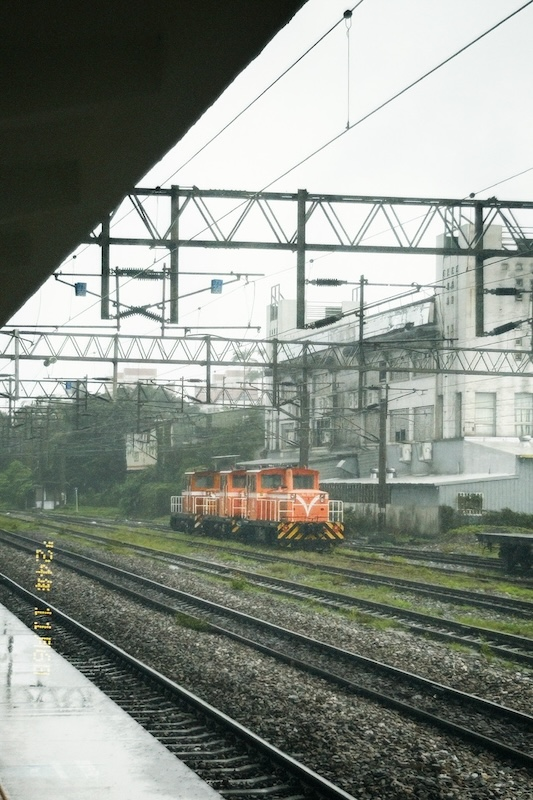

水蜜桃罐頭
2024/十一月號
這裡沒有被雨淋濕的紅磚減速丘

一格格錯落有致的水稻田間，偶爾突兀地出現幾棟平屋，隨性而悠閒。這是我在火車上看見的宜蘭，爸爸說，這就是宜蘭的風景。
11月初，氣溫終於降下了些，剛踏上月台，冷風便迅速的從針織外套的縫隙鑽入，帶來一絲寒意。走出車站，是一大片被雨淋得又濕又滑的紅磚地板，深黃的枯葉散落在這片紅色減速丘上，空氣中飄散著泥土的氣息，與冷風一起，成了我踏入宜蘭的第一印象。
街上，安親班老師正對學生破口大罵，剛放學的高中生目不轉睛地盯著手中的小螢幕。我想知道，他們眼中的宜蘭，是否與我所見的一樣悠閒。
「它提醒了總是細細品味旅遊地的我們，也該好好看看日常生活中被忽略的、熟悉的風景。」這是我在高一的第一堂文學與多媒體課上，選擇「我在細細品嚐，恬淡的家鄉。」作為最喜歡的臺灣民歌歌詞的原因。老師似乎對這個答案十分滿意，還特意在旁邊寫了個「good」。
但老實說，我始終無法對我所在的萬華產生這樣的情懷。
旅人們或許能在這裡陳舊的房屋間，讀出時間留下的浪漫痕跡。但我所見的萬華是菸蒂與檳榔渣，是空氣中不知從何而來的臭味，是滿城蒼老的面容。
臺北車站的月台，吹不進冷風，更看不見天空。這個沒有減速丘的地下王國，有太陽照不進、雨也打不散的煩悶，和一群走得又快又急的人們。我好像在這趟單日來回的短暫旅程後，才深切地意識到，臺北人走路速度真的很快。
我不知道那些倉促腳步聲的背後，有多少人曾停下來細細品嚐這座城市，又或者，他們有一個不在台北的、真正的家——一個有天空、有小雨、有風的恬靜家鄉。
2024/11/6